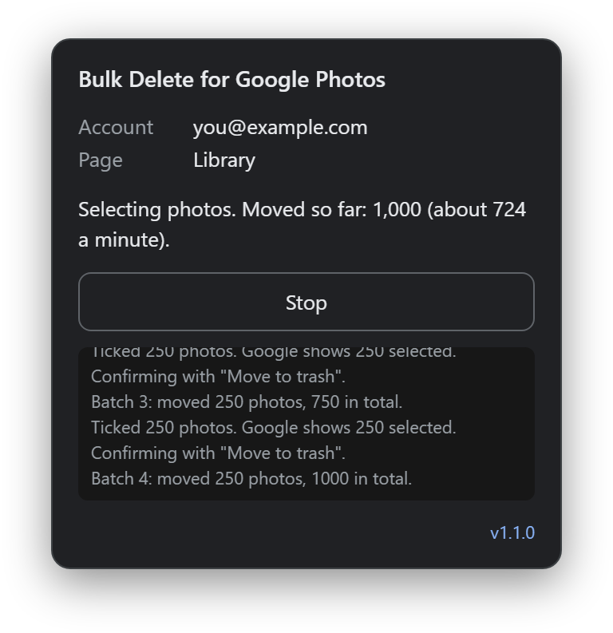
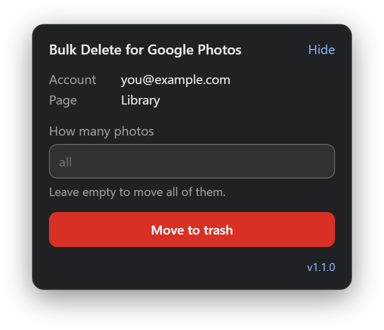
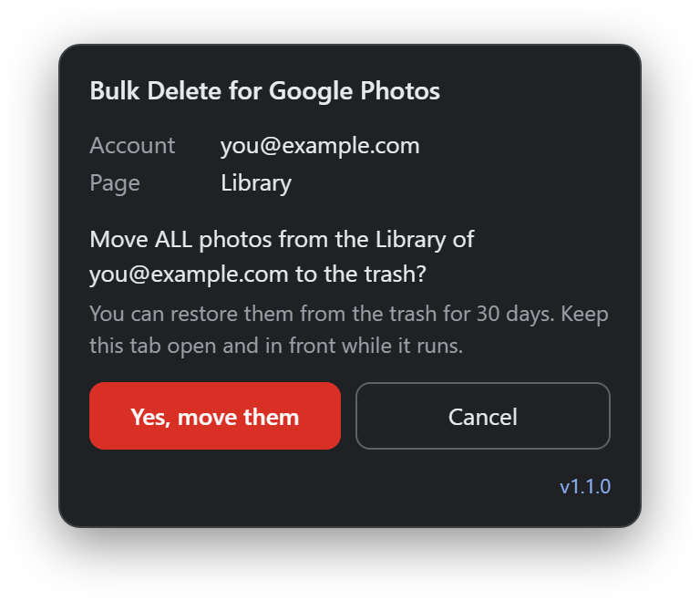
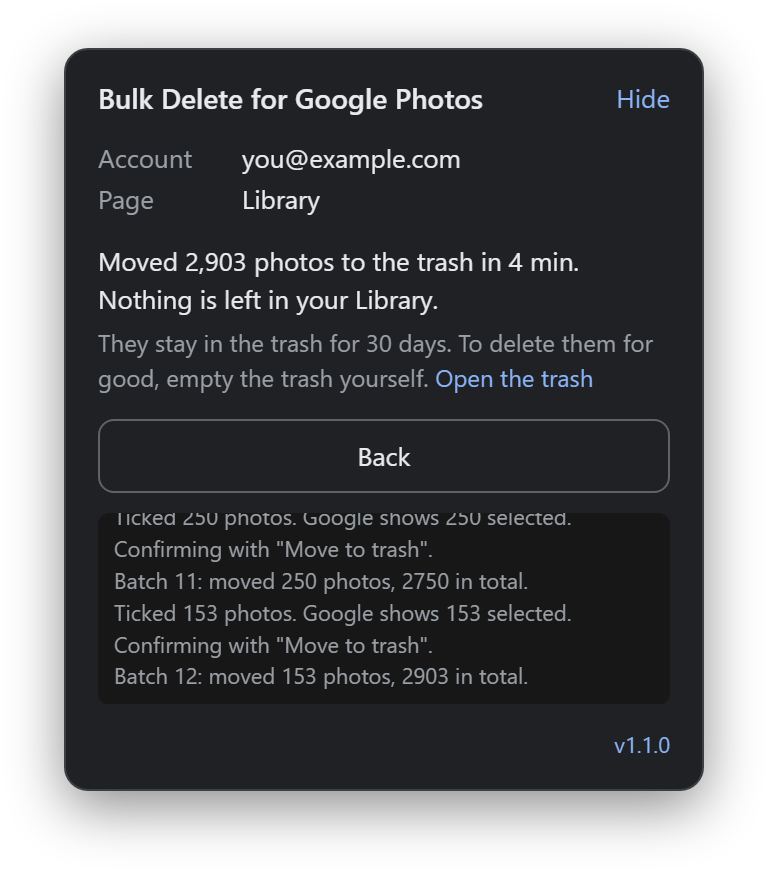

It never empties the trash
It only moves photos to the trash, like the trash button in Google Photos. Google keeps them there for 30 days, and you can restore them. Emptying the trash is always your own click.
Free and open source. No daily limit.
Google Photos has no select-all or delete-all button. Bulk Delete for Google Photos ticks the photos for you and moves them to the trash, 250 at a time, until your Library is empty.

It clicks the same checkboxes and buttons you would click yourself. A small panel at the bottom right of Google Photos shows what it does.
Install it, then open photos.google.com. The panel appears at the bottom right. It shows the account it will work in.

Leave the box empty to move all photos, or enter a number. It asks once more, and names the account, before it starts.

Keep the tab open and in front. It ticks the photos, checks the count Google shows and moves them to the trash, 250 at a time. The panel shows the total and the time it took.

When you are sure, empty the trash in Google Photos yourself. Until then, Google keeps the photos there for 30 days. To clean up archived photos, open Archive and run it there too.
It only moves photos to the trash, like the trash button in Google Photos. Google keeps them there for 30 days, and you can restore them. Emptying the trash is always your own click.
No server, no account, no analytics and no network requests. It runs only on photos.google.com, in your own browser. The code is open source, so anyone can check.
It clicks nothing on other pages, and stops when the page or the signed-in account changes. It never clicks a button, or confirms a dialog, that speaks of emptying the trash or deleting for good.
Bulk Delete for Google Photos collects no data and sends nothing anywhere. The panel reads the address of the signed-in account from the page, to show it to you and to stop if the account changes. It keeps two small settings in your own browser: whether the panel is hidden, and the name of any button you taught it. This website has no analytics and no trackers either.
It is made for a desktop browser. It is not in the Chrome Web Store yet, so you load it yourself. That takes about a minute.
The extension
chrome://extensions. In Edge that is edge://extensions, in Brave brave://extensions.Keep that folder, because the browser loads the extension from it. To update, unzip the new ZIP over the old folder, then click the reload arrow on the extension's card.
The userscript
Use the extension or the userscript, not both. In Chrome, Edge and Brave, a userscript manager also needs Allow User Scripts turned on in its extension details. The userscript is new in version 1.1.0. If it does not start in your browser, report a bug.
Then open photos.google.com, close any Google pop-up, check the account in the panel and click Move to trash.
Yes. Google Photos has no select-all or delete-all button, so this tool does the ticking for you. Leave the number box empty, and it moves every photo in your Library to the trash, 250 at a time, until none are left. Then open Archive and do the same there. On a real account it moved 2,903 photos in four minutes.
No. It only moves photos to the trash, and it never empties the trash. Google keeps them there for 30 days, and you can restore them until then. Google deletes them for good after 30 days, or when you empty the trash yourself.
It can. When you delete a photo in Google Photos, Google also removes it from the Android phones, iPhones and iPads that have Google Photos installed with backup turned on for that account, and from the places you shared it. The confirm dialog of Google Photos warns about this too. To keep copies, download your photos first with Google Takeout.
No. It makes no network requests, and it has no server and no analytics. It only clicks buttons on photos.google.com, in your own browser, the same buttons you would click. The extension asks for no permissions beyond running on photos.google.com. The code is open source, so anyone can check.
Yes. It is free and open source under the MIT licence. There is no paid version, no daily limit and no account.
It was tested live on the Dutch interface of Google Photos. It knows the word for trash in more than 30 languages. If it cannot find a button in your language, it asks you to click that button once, and it remembers your click. If it still does not work, report it on GitHub and name your language.
Google has not added one. On the web you can tick a whole day, or tick one photo and Shift-click another to select everything between them. With thousands of photos, that still means a lot of scrolling and clicking. This tool does the ticking for you and checks the count Google shows before each batch.
Google Photos, Gmail and Google Drive share your Google storage. To free the space your photos take, move them to the trash with this tool, in your Library and in your Archive. Then empty the trash in Google Photos. Otherwise Google does that after 30 days. Check your storage at one.google.com/storage. Google says that when you delete many photos at once, it can take some time before the space is freed.
Free and open source, with no daily limit. Your photos stay in the trash for 30 days, so you can still change your mind.